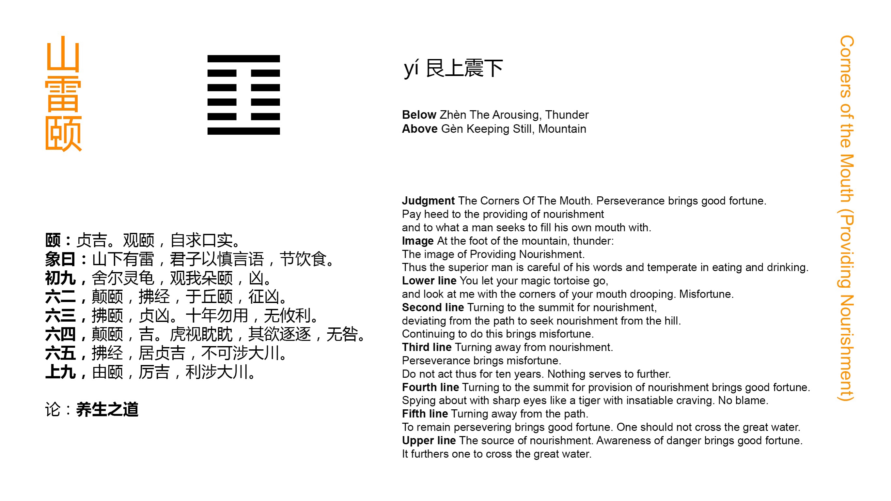

Chinese: 颐 ䷚ yí

Yí ䷚ indicates that with firm correctness there will be good fortune (in what is denoted by it). We must look at what we are seeking to nourish, and by the exercise of our thoughts seek for the proper aliment.
1. The first NINE, undivided, (seems to be thus addressed), 'You leave your efficacious tortoise, and look at me till your lower jaw hangs down.' There will be evil.
䷚ changing to ䷖
Matching Line 1 in Adjacent Hexagram: ䷛
2. The second SIX, divided, shows one looking downwards for nourishment, which is contrary to what is proper; or seeking it from the height (above), advance towards which will lead to evil.
䷚ changing to ䷨
Matching Line 2 in Adjacent Hexagram: ䷛
3. The third SIX, divided, shows one acting contrary to the method of nourishing. However firm he may be, there will be evil. For ten years let him not take any action, (for) it will not be in any way advantageous.
䷚ changing to ䷕
Matching Line 3 in Adjacent Hexagram: ䷛
4. The fourth SIX, divided, shows one looking downwards for (the power to) nourish. There will be good fortune.
Looking with a tiger's downward unwavering glare, and with his desire that impels him to spring after spring, he will fall into no error.
䷚ changing to ䷔
Matching Line 4 in Adjacent Hexagram: ䷛
5. The fifth SIX, divided, shows one acting contrary to what is regular and proper; but if he abide in firmness, there will be good fortune. He should not, (however, try to) cross the great stream.
䷚ changing to ䷩
Matching Line 5 in Adjacent Hexagram: ䷛
6. The sixth NINE, undivided, shows him from whom comes the nourishing. His position is perilous, but there will be good fortune. It will be advantageous to cross the great stream.
䷚ changing to ䷗
Matching Line 6 in Adjacent Hexagram: ䷛
Yí ䷚ is the symbol of the upper jaw, and gives name to the hexagram; but the whole figure suggests the appearance of the mouth. There are the two undivided lines at the bottom and top, and the four divided lines between them. The first line is the first in the trigram Zhèn ䷲, denoting movement; and the sixth is the third in Zhèn ䷲, denoting what is solid. The former is the lower jaw, part of the mobile chin; and the other the more fixed upper jaw. The open lines are the cavity of the mouth. As the name of the hexagram, Yí ䷚ denotes nourishing, -- one's body or mind, one's self or others. The nourishment in both the matter and method will differ according to the object of it; and every one must determine what to employ and do in every case by exercising his own thoughts, only one thing being premised, -- that in both respects the nourishing must be correct, and in harmony with what is right. The auspice of the whole hexagram is good.
The first line is strong, and in its proper place; its subject might suffice for the nourishing of himself, like a tortoise, which is supposed to live on air, without more solid nourishment. But he is drawn out of himself by desire for the weak 4, his proper correlate, at whom he looks till his jaw hangs down, or, as we say, his mouth waters. Hence the auspice is bad. The symbolism takes the form of an expostulation addressed, we must suppose, by the fourth line to the first.
The weak 2, insufficient for itself, seeks nourishment first from p. 116 the strong line below, which is not proper, and then from the strong 6, not its proper correlate, and too far removed. In either case the thing is evil.
Line 3 is weak, in an odd place; and as it occupies the last place in the trigram of movement, all that quality culminates in its subject. Hence he considers himself sufficient for himself, without any help from without, and the issue is bad.
With line 4 we pass into the upper trigram. It is next to the ruler's place in 5 moreover, and bent on nourishing and training all below. Its proper correlate is the strong 1; and though weak in himself, its subject looks with intense desire to the subject of that for help; and there is no error.
The subject of line 5 is not equal to the requirements of his position; but with a firm reliance on the strong 6, there will be good fortune. Let him not, however, engage in the most difficult undertakings.
The topmost line is strong, and 5 relies on its subject; but being penetrated with the idea of the hexagram, he feels himself in the position of master or tutor to all under heaven. The task is hard and the responsibility great; but realising these things, he will prove himself equal to them.